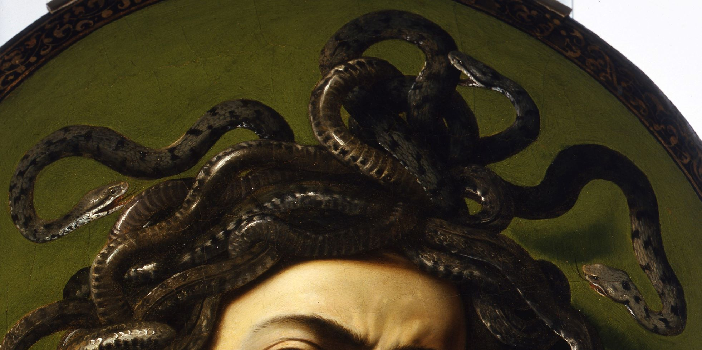

Conclusion
Our project on Caravaggio’s Medusa allowed us to explore how semantic web technologies and large language models can be applied to the representation and enrichment of Italian cultural heritage. Below are the main outcomes of our work.
SPARQL and ArCo Ontology
Working with SPARQL and the ArCo ontology demonstrated the effectiveness of structured querying for cultural heritage data. Throughout the project, we observed that: careful keyword selection is essential to avoid redundant or irrelevant results; SPARQL’s logical structure enables the identification of both explicit metadata gaps and implicit contextual gaps; the modular nature of ArCo requires precise navigation, especially when dealing with complex subjects such as mythological figures and symbolic themes.
Large Language Models
Our experiments with multiple LLMs highlighted clear differences in their performance when applied to art-historical content:
LLMs performed best when guided by structured prompting techniques, particularly few-shot and chain-of-thought. For highly specific information—such as iconographic interpretation or mythological classification—the models did not always provide accurate or consistent answers. ChatGPT generally produced more fluent and coherent explanations, while Gemini often delivered more precise factual outputs when supported by well-designed prompts. These observations confirmed the importance of model-specific prompting strategies and cross-validation when generating knowledge intended for RDF enrichment.
Future Developments
This project opens several possibilities for further enrichment of cultural heritage knowledge graphs:
Additional RDF triples could be added to ArCo to better represent the mythological and iconographic aspects of Medusa, including the depiction of the Gorgon, the reflective shield, and the narrative link to Perseus. The ontology could be extended with more explicit classes or properties for mythological subjects, improving the modeling of artworks that combine historical and symbolic elements. The methodology developed here can be applied to other artworks by Caravaggio or to broader cultural heritage datasets, supporting more complete and semantically rich representations.
